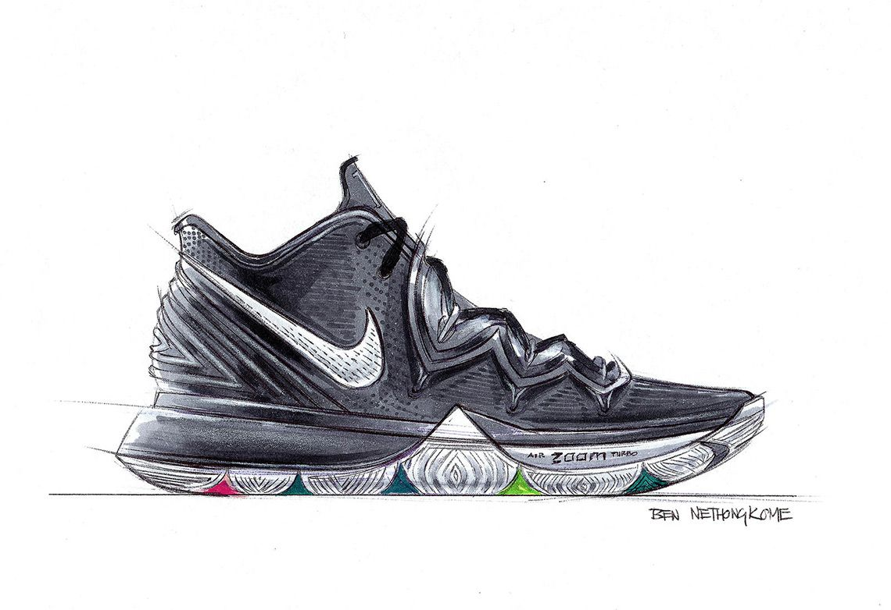

Sketching
I like to sketch a lot. As I mentioned in the sneakers section, I wish to become a sneaker designer. When I am bored, I always sketch out sneakers or doodle. Art has always been one of my biggest passions. It is my way of expressing my feelings. Art can be pretty powerful in my view. Whatever I do in the future, I wish for it to be an artistic type of job. Not only would this job pay a lot, it would be very fun and enjoyable.
